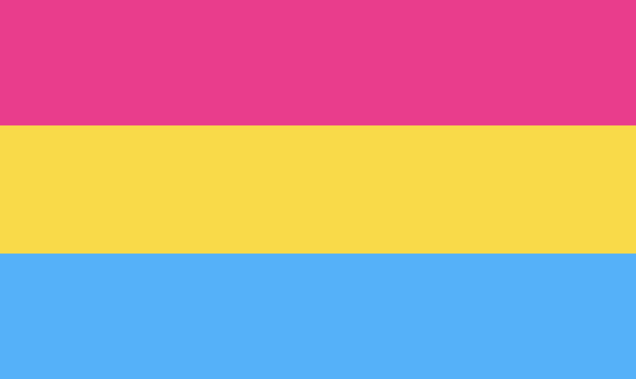

Hello and welcome to this website's page on Sexualities! Down below you will find a list of many sexualities under the LGBTQ+ community as well as a brief introduction on what each sexuality is exactly.
Hopefully this webpage can give you the basic rundown of many of the distinct sexualities in the LGBTQ+ community which are unique from heterosexuality. We also hope the information from this webpage may allow you to have a greater understanding of those with differing sexualities as you, and we also hope this greater understanding may lead you to have an increased empathy for those people as well.
At the bottommost portion of this homepage you can find the links to the other pages of the website.
Sexualities
Gay
Someone who is gay is someone who identifies as a man and is only sexually and romantically attracted to other men.
Lesbian
A lesbian is specifically someone who identifies as a woman and is only sexually and romantically attracted to other women.
Bisexual
Someone who identifies as bisexual has an attraction to more than one gender. These particular genders they're attracted to can be the same or different from their own gender, and those who identify as bisexual can still have preferences according to gender (i.e. some bisexuals may lean towards men rather than women despite being able to feel attraction towards both).
Omnisexual
Someone who identifies as omnisexual is attracted to all genders. However, this is not a gender blind attraction, so someone who is omnisexual still notices gender and the differences between the different genders, and they may even have preferences towards certain genders as well.
Pansexual

Those who identify as pansexual are attracted to anyone regardless of their gender. Pansexuals may choose to describe themselves as "gender blind", basically meaning that someone's gender is something they don't take notice of when it comes to their attraction to that particular person, regardless of the differences that person's gender has with other genders.
Polysexual
Someone who identifies as polysexual is someone who is attracted to many (though not necessarily all) genders. For example, someone who is polysexual may be attracted to all genders except cisgender women.
Asexual
Someone who identifies as Asexual (or ace, for short) feels little to no sexual attraction, but those who identify as asexual aren't automatically aromantic and so may still experience some form of romantic attraction.
Demisexual
Demisexuality technically falls under the umbrella of asexuality. However, unlike a person who identifies as asexual, a person who identifies as demisexual may experience sexual attraction, but only toward people they have a strong emotional connection with.
Aromantic
Someone who identifies as Aromantic (or aro, for short) experiences little to no romantic attraction, but those who identify as aromantic aren't automatically asexual and so may still experience some form of sexual attraction.
Demiromantic
Demiromantic falls under the umbrella of aromatic. However, unlike someone who identifies as aromantic, someone who identifies as demiromantic may experience romantic attraction, but only toward people they have a strong emotional connection with.
AroAce
Someone who identifies as AroAce experiences neither romantic nor sexual attraction.
Abrosexual
Someone who identifies as abrosexual is someone whose sexual and romantic preferences may change overtime during their life. To expound, it is actually quite common for abrosexuals to experience differing levels of sexual and romantic feelings across their life. For those who identify as abrosexual, their sexuality is in a state of flux, and these changes in sexual orientation can happen quickly with varying intensities.
Pomosexual
Pomosexuality can be both be an umbrella term and a sexuality. Someone who is pomosexual may feel attraction, but would prefer not to elaborate more on or put a label on it, or their own sexuality doesn't exactly fit into a particular category.